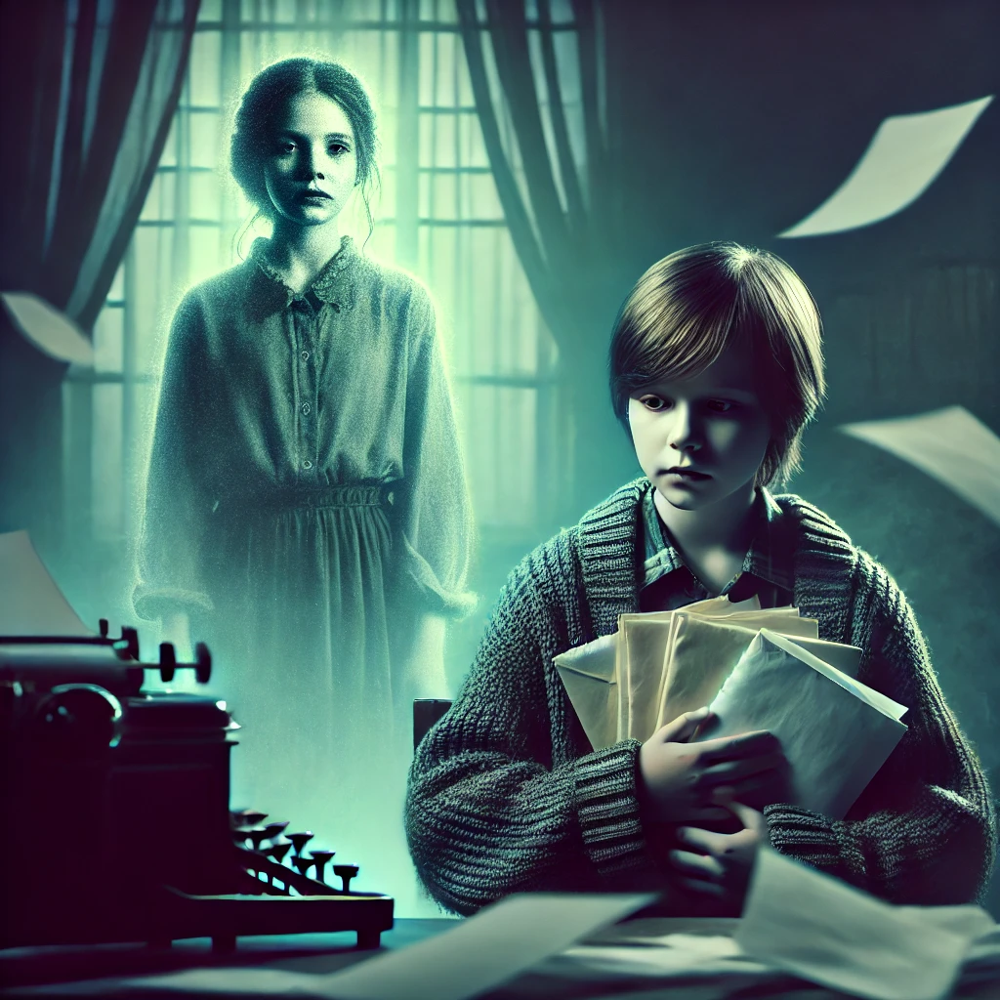

두근두근 내 인생
목차
작가
김애란
출판 연도
2011년
감상평에 대한 AI그림
이 소설은 신체 나이가 빠르게 늙는 병, 조로증을 앓는 ‘아름’의 이야기이다.
아름은 자신과 비슷한 아픔을 가진 암 환자 소녀와 얼굴도 모른 채 편지를 주고받으며 희망을 얻지만, 그 모든 것이 한 작가의 거짓된 창작이었다는 사실을 알게 된다.
편지를 통해 위로받고 살아갈 힘을 얻었던 아름에게 이 진실은 너무나도 잔혹했다. 희망이 단숨에 무너지고, 거짓된 위로가 더 깊은 절망이 되어 돌아오는 순간,
아름의 건강은 급격히 악화되고 비극적인 결말을 맞이한다. 나는 이 이야기가 단순한 시련을 넘어 희망과 사랑으로 병을 극복하는 감동적인 결말을 맺기를 바랐다.
하지만 작가는 그 기대를 철저히 배신하며, 잔혹한 현실과 씁쓸한 진실을 우리 앞에 던졌다. 아름이 느꼈을 배신감과 상실감이 고스란히 전달되어, 읽는 내내 가슴이 무겁고 답답했다.
마지막 장을 덮고도 한동안 충격에서 벗어날 수 없었고, 희망을 이용한 잔인한 전개가 너무나 허망하고 슬프게 느껴졌다.

감상평에 대한 AI평가
~~~~AI평가~~~~~
✨ 기대와 현실의 괴리를 극적으로 강조하며, 감정의 흐름이 점점 고조되는 방식으로 전개되어 몰입감을 극대화한다.
✨ 배신감과 상실감이 절망으로 치닫고, 충격과 허망함이 깊은 슬픔으로 변하는 강렬한 감정선이 돋보인다.
✨ 작가의 전개 방식에 대한 분노와 허탈함이 강하게 묻어나며, 희망을 무너뜨린 잔혹한 서사에 대한 강한 비판이 드러난다.
감정의 소용돌이 속에서 절망과 분노를 극적으로 표현하며, 작품이 남긴 씁쓸한 충격을 생생하게 전달한 강렬한 감상평이다.